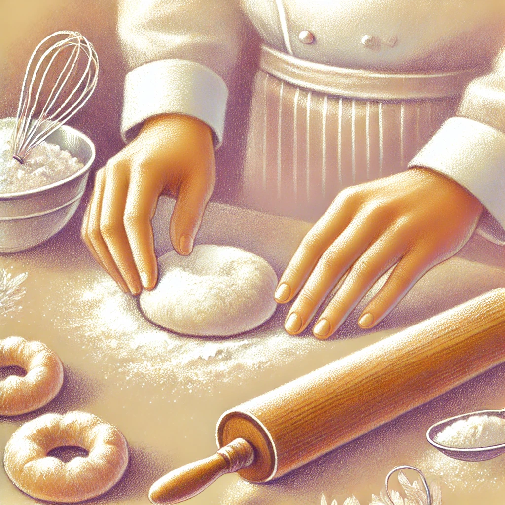

À Propos
🍰 Une Passion Devenue Métier
Depuis son plus jeune âge, notre cheffe est passionnée par la cuisine et la pâtisserie. Après des années à expérimenter et à perfectionner ses recettes, elle a décidé en 2021 de franchir une étape importante en obtenant son CAP Pâtisserie afin d'affiner son savoir-faire et de maîtriser pleinement son art.
Diplômée en 2021, elle a choisi de se consacrer entièrement à sa passion et de partager son amour pour les douceurs à travers des créations uniques, alliant finesse et gourmandise.
🌱 Un Engagement pour la Qualité et l'Authenticité
Chez Les Petites Douceurs, chaque pâtisserie est confectionnée avec des ingrédients biologiques, de saison et de haute qualité. Nous privilégions des matières premières naturelles et locales, garantissant ainsi une saveur authentique et un respect des cycles naturels des produits.
Notre cheffe met un point d'honneur à allier esthétisme et goût, en proposant des créations raffinées qui éveillent les sens et enchantent les papilles.
🎂 Des Pâtisseries sur Mesure
Que ce soit pour un anniversaire, un mariage, un événement spécial ou simplement pour le plaisir d’un moment gourmand, nous mettons notre savoir-faire au service de vos envies.
💜 Merci de nous faire confiance et de partager avec nous cette belle aventure sucrée !